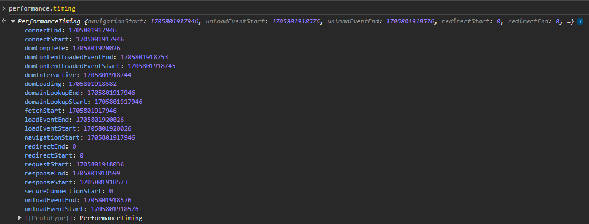

- 01 前端如何优化资源加载
- 02 浅谈前端性能优化之评估工具
- 03 网页太慢了怎么排查
- 04 Performance 面板分析性能瓶颈全流程
- 05 性能优化全家桶：6 个方面 9 点建议
- 06 内存泄漏排查
- 07 使用 Web Worker 优化前端大文件上传
- 08 看《浏览器基本原理与实践》后，36点总结
- 09 加载注意事项
- 10 网站优化之静态资源优化
- 11 资源优先级
- 12 书写高性能的代码
- 13 构建优化
- 14 渲染优化
- 15 API 技巧
- 16 页面加载流程分析技巧
- 17 浏览器渲染性能分析技巧
- 18 性能优化-时间分片渲染简单做法
- 19 聊聊图片预加载
- 20 利用 Performance API 分析网站性能
- 21 了解透彻浏览器缓存
利用 Performance API 分析网站性能

window.performace.timing 对象包含了完整的网页加载性能数据，
页面加载的第一个时间点就是 navigationStart，表示上一个页面的 unload 事件触发，接下来的时间点是 fetchStart，表示开始获取当前页面内容。fetchStart 时间点和 navigationStart 时间点之间的时间差是浏览器内核为加载新页面做的一些准备工作耗时。
获取页面内容的第一步是查询是否有跟页面相关的资源缓存，查询完毕后，会触发开始 DNS 解析的时间点 domainLookupStart。domainLookupStart 时间点和 fetchStart 时间点之间的时间差就是查询缓存所消耗的时间。
DNS 解析结束的时间点是 domainLookupEnd。domainLookupEnd 时间点和 domainLookupStart时间点之间的时间差是 DNS 解析消耗的时间。
DNS 解析技术之后会开始建立 TCP 连接，TCP 连接开始和结束的时间分别是 connectStart 和 connectEnd。connectStart 时间点紧接着 domainLookupEnd 时间点， connectEnd 时间点和 connectStart 时间点之间的时间差是建立 TCP 消耗的时间。
TCP 连接建立之后，开始发送请求内容至服务端，这个时间点是 requestStart。服务端接收到完整的请求并处理完毕后，会将响应结果返回给客户端，开始发送响应结果的时间点为 responseStart。浏览器收到完整的响应结果之后，会触发 responseEnd 时间点。
浏览器接收到响应结果之后，会开始 DOM 解析，这个时间点是 domLoading， DOM 解析完成的时间点是 domInteractive。DOM 解析完成是指 DOM 树构建完成，页面依赖的外部资源，如 CSS、JavaScript、图片等，还未开始加载。
注意： domLoading 时间点不一定在 responseEnd 时间点之后，有可能浏览器只接收了部分响应数据就开始解析 DOM 树。
DOM 树解析完成之后，会开始按照顺序运行页面脚本和加载依赖外部资源，其中 JavaScript 资源会同步加载和执行。一旦所有页面脚本运行完毕，会触发 DOMContentLoaded 事件，这个时间点是 domContentLoadedStart。
开发者注册的 DOMContentLoaded 事件执行完毕之后，会触发 domContentLoadedEnd 时间点。
当依赖的外部资源全部加载并解析之后，会触发 domComplete 时间点，同时会触发暴露给开发者的 load 事件。loadEventStart 时间点表示 load 事件开始触发，loadEventEnd 时间点表示所有开发者注册在 load 事件上所有脚本执行完毕。
